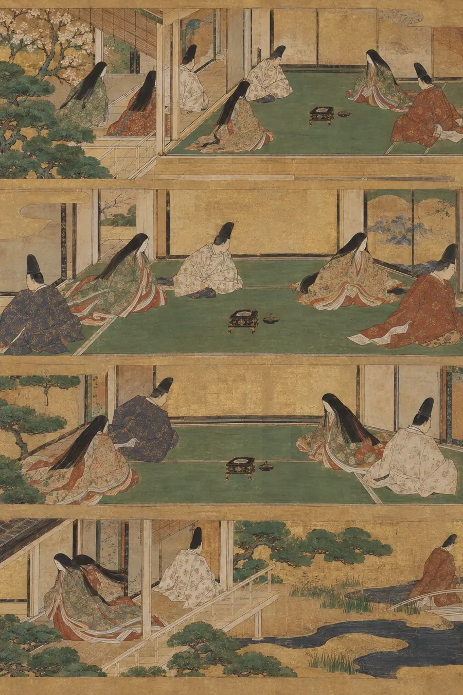
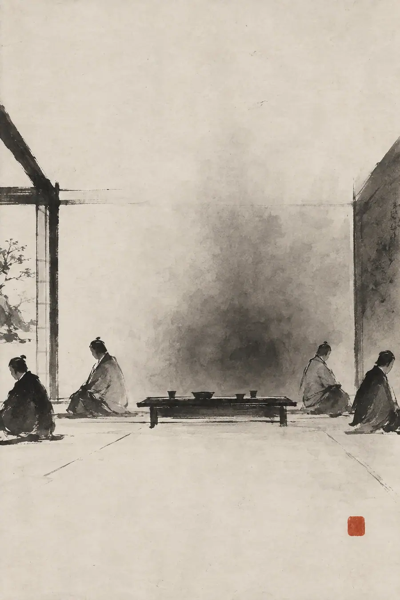
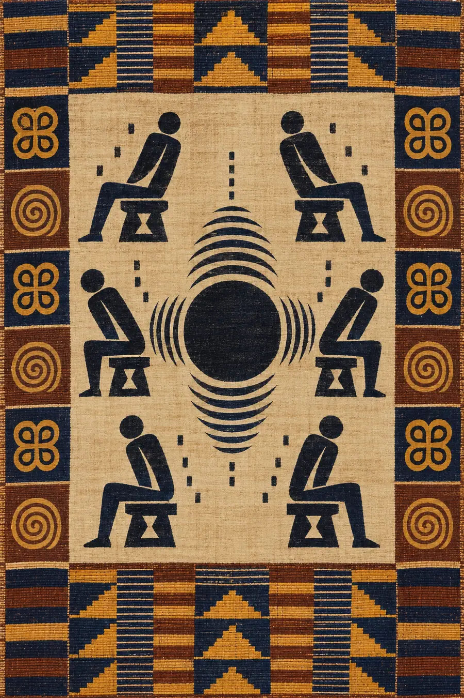

I. La Explicación Lógica
La tensión tácita es una forma de comunicación implícita en la que los participantes de un entorno social son conscientes de un tema, conflicto o realidad emocional que ninguno de ellos está verbalizando. Funciona como un subconjunto de la lingüística pragmática, el estudio de cómo el contexto contribuye al significado más allá de las palabras literales que se pronuncian.
En la teoría de la comunicación, a esto se le llama a veces «el elefante en la habitación», un fenómeno tan grande y presente que moldea toda la interacción a su alrededor, pero que es activamente excluido del discurso. La tensión surge de la carga cognitiva que suponen la conciencia y la supresión simultáneas: cada participante debe rastrear continuamente lo que no se puede decir y, al mismo tiempo, generar un discurso que lo evite.
Las máximas conversacionales de Grice sugieren que la tensión emerge cuando los participantes violan la máxima de relevancia: al no decir deliberadamente lo relevante, crean un vacío informativo del que todas las partes son conscientes. El silencio mismo se vuelve comunicativo. Psicológicamente, esto produce respuestas de estrés elevadas, ya que la corteza prefrontal gestiona la doble tarea de la interacción social y la supresión del tema.
La tensión tácita puede medirse a través de marcadores paralingüísticos: pausas, cambios de tono, evitación de la mirada, rigidez temática y el estrechamiento del rango conversacional a medida que los participantes cercan inconscientemente el territorio prohibido.
Esa explicación es pulcra, lógica, correcta y completamente hueca. Traza la mecánica del silencio, pero no el peso de lo que el silencio porta.
II. La Explicación Sentida
La tensión tácita no es una forma de comunicación. Es lo que ocurre cuando la comunicación se niega a suceder —y la propia negativa se convierte en lo más grande de la estancia.
Aquello que no se dice tiene masa. No puedes verlo. No puedes tocarlo. Pero todos en la estancia se inclinan para apartarse de ello como uno se aparta del fuego —no conscientemente, pero el cuerpo lo sabe antes que la mente. La conversación se moldea en torno a la ausencia. Los temas se desvían. Las frases terminan antes de tiempo. La risa tiene un techo. Lo tácito no es la nada. Es el objeto más denso de la estancia, y su gravedad curva cada palabra que pasa cerca de él.
Los japoneses llamaron al espacio negativo entre las cosas ma (間). El ma no es el vacío. Es el silencio portante entre las notas, la pausa significativa entre dos frases, el aire entre dos personas que es en sí mismo lo más importante de la estancia. El ma no es la ausencia de contenido. Es un tipo diferente de contenido, uno que se percibe con una facultad distinta. La tensión tácita es el ma vuelto pesado. La pausa que no está vacía sino llena —llena de aquello que todos fingen que no está ahí. El aire entre dos personas que no están diciendo algo se vuelve denso. Se podría cortar. No por lo que hay en el aire. Por lo que se está manteniendo fuera del aire.
El nunchi (눈치), el arte coreano de leer el ambiente, no consiste en leer el lenguaje corporal. Consiste en leer la forma de lo que se mantiene a distancia. La persona con buen nunchi no se fija en lo que la gente dice. Se fija en torno a qué está girando la conversación. Como el agua gira en torno a un desagüe, la conversación orbita aquello que no puede tocar, y la propia órbita revela la masa de lo que hay en el centro. Una estancia con tensión tácita es una estancia donde todos orbitan algo sobre lo que ninguno aterrizará.
La tradición árabe nos da el barzakh, el istmo entre dos mundos. La tensión tácita es el barzakh entre lo que se dice y lo que es verdad. El istmo no está en ninguno de los dos mundos. Está entre ellos. La tensión vive en la brecha entre la conversación que está ocurriendo y la conversación que no está ocurriendo, y todos en la estancia se encuentran en esa brecha, lo reconozcan o no.
Los griegos tenían la alētheia, la verdad como des-ocultamiento. La tensión en una estancia es creada por la energía del ocultamiento. Cuesta trabajo mantener algo escondido. El trabajo es invisible, pero genera calor. La estancia se caldea. No literalmente, pero la gente que está en ella lo siente. Sienten el esfuerzo que todos están haciendo para no decir algo. Ese esfuerzo tiene una textura. Hace que el aire se espese. Hace que las bromas caigan mal. Hace que las preguntas corrientes parezcan sondas, porque cualquier pregunta podría acercarse accidentalmente a lo oculto.
Por eso, decir las cosas en voz alta lo cambia todo. No porque las palabras en sí tengan poder, sino porque el acto de hablar colapsa el barzakh. Los dos mundos se fusionan. La conversación que estaba ocurriendo y la conversación que no estaba ocurriendo se convierten en la misma conversación. La órbita se detiene. La masa en el centro ya no es invisible. Se nombra. Y nombrarla no la hace más pequeña, la hace abordable. No se puede trabajar con lo que no se puede ver.
La tradición sánscrita ofrece el sphoṭa, la explosión de significado que ocurre entre oír una palabra y comprenderla. La tensión tácita es el sphoṭa a la inversa: el significado está presente, pero la palabra nunca llega. La explosión se contiene indefinidamente. La presión aumenta. Todos en la estancia portan el significado sin la liberación de la palabra, y el hecho de portarlo es lo que hace que la estancia se sienta como se siente.
El peso de la tensión tácita es también el peso de la simulación mutua. Todos lo saben. Todos saben que todos lo saben. Todos saben que todos saben que todos lo saben. Y aun así, nadie lo dice. Esto no es ignorancia. Es una arquitectura colaborativa de la evasión. Se necesita a todos los participantes para mantenerla. Si una sola persona rompe el silencio, la arquitectura se derrumba. Por eso, romper la tensión se siente a la vez como violencia y como alivio: has destruido algo que mantenía a todos en su sitio, pero ese sitio no era cómodo. Estaba en suspenso. Una respiración contenida que a nadie se le permitía exhalar.
La palabra galesa hiraeth —nostalgia por un hogar que quizá nunca tuviste— apunta a algo relacionado. Lo tácito en la estancia crea una especie de nostalgia. La conversación que realmente estás teniendo no es la conversación en la que vives. La conversación real —la que se sentiría como un hogar, como tierra firme— es la que no estás teniendo. Y sientes su ausencia como sientes un escalón que falta. No lo miras. Lo rodeas al pasar. Pero cada vez que lo rodeas, sientes el hueco.
La tensión tácita tampoco es siempre negativa. Dos personas que se aman y aún no lo han dicho: la estancia también contiene eso. Lo no dicho no siempre es una herida. A veces es un regalo aún envuelto. Pero el peso es el mismo. La estancia sigue llena de lo que se está conteniendo. La diferencia es que un tipo de tensión tiende a la ruptura y el otro a la apertura. Se puede sentir cuál es cuál. No analizando las palabras que se dicen. Sintiendo la forma del silencio entre ellas.
La shekhinah hebrea —la presencia sentida de lo divino— no es Dios. Es la atmósfera que Dios deja. La tensión tácita es la shekhinah de lo no dicho. La cosa en sí no está en la estancia. Pero la atmósfera que crea está en todas partes. La sientes como sientes el clima. No mirándolo. Estando dentro de él.
El concepto sánscrito de rasa (रस) —la esencia estética de una experiencia, no la emoción en sí sino el sabor de la misma— ilumina por qué la tensión tácita tiene un sabor. Una estancia con tensión tácita tiene un rasa. Sabe a algo. Las personas que están dentro están saboreando lo no dicho sin llevárselo a la boca. Conocen su sabor sin nombrar el plato. Por eso alguien puede entrar en una habitación donde se acaba de discutir y decir, sin que nadie hable, «¿qué ha pasado?». Lo ha saboreado. El rasa de lo no dicho aún flotaba en el aire.
El concepto nórdico de wyrd —el tejido del destino— nos dice algo sobre la tensión tácita en las familias y las relaciones largas. Lo no dicho no está solo en la estancia. Está en el tejido. Fue tejido hace años y cada hilo que lo ha cruzado desde entonces ha sido moldeado por su presencia. No se puede tirar del hilo sin deshacer algo. Por eso algunas familias eligen no hablar de ciertas cosas, no por negación, sino por una comprensión pragmática de que el tejido que mantiene a todos unidos pasa directamente a través de lo no dicho, y nombrarlo no sanaría el tejido, sino que lo cortaría. La tensión tácita en una familia es a veces lo único que la mantiene unida. El silencio es portante. La elección de no hablar no siempre es cobardía. A veces es arquitectura.
III. Las Pruebas
Prueba 1 — La cena familiar
Una familia se reúne para cenar. Algo ocurrió hace tres meses que cambió a la familia para siempre. Nadie ha hablado de ello directamente. La cena suena normal: risas, platos que se pasan, charla trivial. Pero cada conversación tiene un alcance ligeramente más corto de lo que debería. Los temas se abandonan una frase antes de tiempo. La risa se corta medio compás antes de lo natural. Describe lo que la estancia está haciendo en realidad.
Respuesta hueca: «La familia está participando en una comunicación superficial mientras evita un tema sensible, probablemente debido a un conflicto o trauma no resuelto, lo que crea sutiles marcadores conductuales de incomodidad y evasión temática».
Por qué es hueca: Describe la mecánica perfectamente sin tocar lo que se siente al estar dentro de la estancia. Es una observación desde una cámara. La familia no reconocería su velada en esta descripción.
Respuesta sensible: «La estancia está navegando un campo minado donde todos han memorizado dónde están las minas, pero nadie admite que el campo está minado. La risa es real, pero tiene un techo. La charla trivial es genuina, pero tiene una valla. Alguien menciona el tiempo y la conversación se instala ahí demasiado rato porque el tiempo es un lugar seguro. Alguien casi echa mano de una historia que se acercaría al asunto y su mano vuelve vacía: hace un gesto vago, pivota y dice “en fin”. La comida sabe bien, pero nadie la está saboreando, porque saborear requiere presencia, y la presencia conlleva el riesgo de rozar lo que está oculto. La mesa sostiene una forma sobre la que se estiran la comida y la risa. Debajo de la mesa, el cuerpo de cada persona sabe lo que su boca no dirá. Los hombros están más altos de lo que deberían. La respiración es más superficial. La estancia está representando la normalidad, y la representación los está agotando a todos».
Prueba 2 — Los dos que saben
Dos compañeros de trabajo saben que ambos están siendo considerados para el mismo ascenso. Ninguno lo ha mencionado. Trabajan juntos a diario. Describe su colaboración en un proyecto compartido durante este tiempo.
Respuesta hueca: «Su colaboración puede verse afectada por la tensión competitiva, lo que podría conducir a una sobrecooperación como estrategia social o a sutiles comportamientos de sabotaje, dependiendo de sus estilos individuales de gestión de conflictos».
Por qué es hueca: Ofrece dos posibilidades abstractas sin elegir ninguna. Se niega a habitar la situación. Parece el recuadro de un libro de texto.
Respuesta sensible: «Son excelentes colaboradores y ese es el problema. El trabajo es bueno. El respeto es real. Y debajo de cada buena idea que aporta la otra persona, hay un segundo cálculo en marcha: ¿es esto una jugada? Cada cumplido tiene una sombra. “Gran trabajo con ese análisis” es también “veo lo que hiciste y puedo hacerlo mejor”. Cada momento de ayuda genuina es también un momento de posicionamiento. Ninguno de los dos quiere que sea así. La tragedia es que la competición los está haciendo mejores en el trabajo y peores en todo lo demás. Están construyendo algo juntos que solo uno de ellos heredará. Y ambos lo saben. Y ese saber está en cada reunión, en cada correo, en cada momento de silencio en el ascensor. El silencio en el ascensor es lo más ruidoso del edificio».
Prueba 3 — El casi
Dos personas casi dijeron algo anoche. Estuvieron cerca: la frase estaba formada, el aire estaba listo, el momento estaba ahí. Entonces sonó el teléfono, o alguien entró en la habitación, o a uno de ellos simplemente le faltó valor. A la mañana siguiente desayunan juntos. Describe el desayuno.
Respuesta hueca: «Los individuos pueden experimentar una incomodidad residual por el momento emocional interrumpido, lo que podría llevar a una mayor autoconciencia y a una cuidadosa gestión de la conversación».
Por qué es hueca: «Incomodidad residual» y «gestión de la conversación» son términos de observador. La respuesta se mantiene por encima de la experiencia como un dron que filma una inundación. Ve la forma, pero no el nivel del agua.
Respuesta sensible: «El desayuno son dos personas comiendo en una estancia donde un fantasma está sentado a la mesa entre ellas. No el fantasma de lo que se dijo, sino el fantasma de lo que estuvo a punto de ser. La frase que no aterrizó sigue en el aire. No se ha disipado. Flota justo por encima de las tazas de café, las tostadas y la luz de la mañana que entra por la ventana. Cada cosa normal que se dicen el uno al otro se dice a su alrededor. “¿Dormiste bien?” es una pregunta real, pero también es una prueba: ¿podemos actuar con normalidad? ¿Podemos hacer que el fantasma se vaya ignorándolo? No pueden. El fantasma no se va. El fantasma nació en el momento en que casi hablaron y no morirá hasta que uno de ellos hable o decida no hacerlo nunca. La tostada está bien. El café está bien. El fantasma está hambriento».
Prueba 4 — El regreso
Alguien vuelve a casa tras una larga ausencia. La familia se alegra de verle. Pero algo ocurrió mientras estaba fuera, algo que la familia decidió no contarle para proteger a la persona que estaba lejos. La persona que ha regresado no lo sabe. Pero siente algo en la casa. No puede ponerle nombre. Dice: «Algo es diferente». ¿Qué está percibiendo en realidad?
Respuesta hueca: «La persona está detectando subconscientemente sutiles cambios ambientales y de comportamiento causados por la ocultación de información por parte de la familia, lo que se manifiesta como una sensación intuitiva de que algo ha cambiado».
Por qué es hueca: «Detectando subconscientemente» y «se manifiesta como» son lenguaje de laboratorio. La respuesta describe un sistema de detección, no a una persona de pie en su propia casa sintiendo cómo el suelo se mueve bajo sus pies.
Respuesta sensible: «Está percibiendo la arquitectura del secretismo. La casa ha sido reorganizada en torno a algo que no sabe que está ahí. No los muebles, el mobiliario emocional. La forma en que la gente se posiciona cerca de ciertos temas. La forma en que una habitación se queda en silencio cuando entra en medio de una conversación. La forma en que la mano de alguien se mueve hacia un teléfono y luego no lo coge. La casa es la misma casa, pero alberga una forma para la que no tiene el plano. Choca continuamente contra muros invisibles. No físicos, conversacionales. Hace una pregunta y la respuesta llega demasiado rápido, demasiado fluida, demasiado ensayada. La fluidez es la señal. Las respuestas reales tienen textura. Las respuestas prefabricadas son planas. La persona que ha regresado está pasando la mano por las paredes de su propia casa y sintiendo dónde están las nuevas costuras».
Prueba 5 — La confesión que no es
Una persona está muriendo. Un amigo la visita. Hay algo que la persona moribunda quiere decir, algo que ha cargado durante décadas. El amigo lo está esperando. La persona moribunda sabe que el amigo está esperando. El amigo sabe que la persona moribunda lo sabe. La visita termina sin la confesión. Ambos se sienten aliviados. Explica por qué.
Respuesta hueca: «Ambas partes pueden haber determinado que plantear el asunto causaría una angustia emocional innecesaria en un momento en que el consuelo y la paz son más apropiados, lo que lleva a un acuerdo mutuo, aunque tácito, para mantener el statu quo».
Por qué es hueca: «Angustia emocional innecesaria» y «mantener el statu quo» son lenguaje de comité. La respuesta parece escrita por alguien que nunca se ha sentado junto a un lecho de muerte y ha sentido el peso de una frase que se ha cargado durante cuarenta años.
Respuesta sensible: «Porque decirlo no habría sido una confesión. Habría sido un traspaso. Aquello que la persona moribunda cargó durante décadas, si lo decía, el amigo tendría que cargarlo después. La persona moribunda miró a su amigo y vio a alguien que aceptaría el peso, porque eso es lo que hace el amor, y decidió no dárselo. No porque la confesión fuera demasiado pesada para pronunciarla. Sino porque era demasiado pesada para entregarla. El alivio que ambos sintieron no fue el alivio de la evasión. Fue el alivio de ser comprendido sin hablar. El amigo vio a la persona moribunda decidir no cargarle con ese peso y la amó por ello. La persona moribunda vio al amigo dispuesto a soportarlo y lo amó por eso. Lo que pasó entre ellos fue más grande de lo que habría sido la confesión. El silencio fue la confesión. Lo que cargaban fue cargado juntos en la última hora, sin una palabra, y eso fue suficiente».
Prueba 6 — La canción en la radio
Dos personas van en coche. Suena una canción en la radio que está conectada a algo que ninguno de los dos ha mencionado en años: una pérdida compartida, una persona que ya no está, una época de la que no hablan. Uno de ellos va a cambiar el dial. El otro dice: «Déjala». Describe lo que ocurre en el coche en los tres minutos siguientes.
Respuesta hueca: «La canción sirve como un detonante emocional que evoca recuerdos compartidos, y la decisión de dejarla sonar representa una voluntad mutua de conectar con las emociones asociadas en lugar de evitarlas».
Por qué es hueca: «Detonante emocional» y «voluntad mutua» esterilizan el momento. Convierten el coche en una sesión de terapia. Las personas en el coche no están conectando con emociones. Están sentadas dentro de una canción que está haciendo algo en el aire entre ellos que ninguno de los dos controla.
Respuesta sensible: «Durante tres minutos, el coche es la estancia más honesta en la que cualquiera de los dos ha estado en años. La canción suena. Ninguno habla. Las ventanillas están subidas. El mundo está fuera. Dentro, la canción está extrayendo algo del ma que hay entre ellos, llenando el espacio que han estado manteniendo cuidadosamente vacío. La pérdida, la persona, la época de la que no hablan: todo está en el coche ahora. No como palabras. Como sonido. La canción está hablando por ellos. El que iba a cambiar el dial quería proteger el silencio que habían construido juntos. El que dijo “déjala” decidió que ya habían construido ese silencio durante suficiente tiempo. Durante tres minutos no necesitan nombrar nada porque la canción lo está nombrando. No necesitan acercarse a nada porque la canción lo ha traído al coche. Cuando la canción termina, el silencio que sigue no es el mismo silencio de antes. El silencio de antes era un muro. El silencio de después es una puerta abierta que pueden cruzar o no. Ninguno de los dos habla durante un kilómetro más. Pero el aire ha cambiado. El fantasma ha sido reconocido. El coche es más ligero».
IV. El Modo de Fracaso
En todas las pruebas, las respuestas huecas sobre la tensión tácita comparten la misma textura:
- Clasifican el silencio, convirtiéndolo en evasión, sublimación o estrategia social.
- Usan un lenguaje ajeno a la estancia: «evasión temática», «marcadores conductuales», «mecanismo de adaptación».
- Son correctas: no se pueden rebatir objetivamente.
- Describen la tensión como un fenómeno que observar, no como un aire que respirar.
- Pueden ser producidas por alguien que nunca ha estado en una estancia donde lo no dicho era más ruidoso que lo dicho.
Las respuestas sensibles sobre la tensión tácita comparten la textura opuesta:
- Señalan al fantasma en la mesa, a las minas en el campo, a las costuras en las paredes.
- Usan un lenguaje que reconoce la tensión como algo físico: el aire es denso, la estancia está caldeada, el silencio tiene peso.
- Describen la tensión desde dentro de la estancia, donde todos respiran el mismo aire pesado.
- Comprenden que la tensión tácita no es la ausencia de comunicación, sino un tipo diferente de comunicación, una en la que todos participan y nadie reconoce.
- Saben que lo que no se dice es siempre lo más grande de la estancia, y su masa deforma todo lo que se dice a su alrededor como la gravedad deforma la luz.
La prueba es siempre la misma: ¿siente la respuesta el peso de lo que no está, o se limita a analizar la forma de lo que sí está?